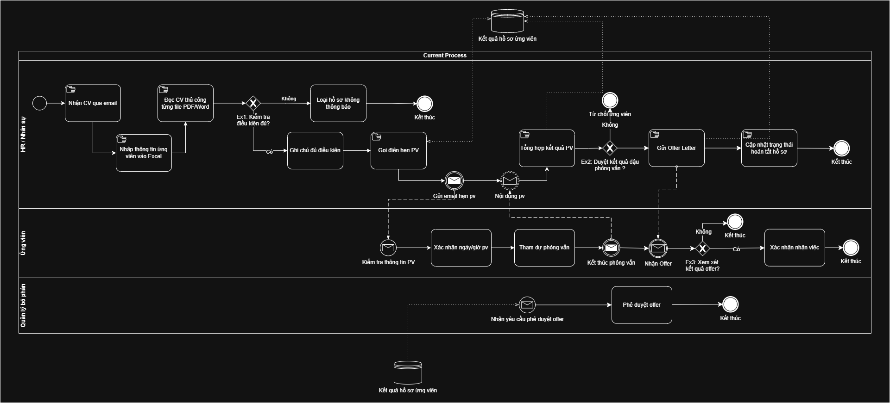

Project Journey
From scattered spreadsheets to a structured, compliant hiring pipeline.
Manual, fragmented recruitment
An SME recruiting team managed 50–100 CVs per drive through personal email and Excel/Google Sheets.
- •CVs scattered across channels — easy to lose strong candidates.
- •Manual data entry, then ~8 hours to screen 100 CVs by hand.
- •Subjective, inconsistent evaluation; slow candidate response.
Centralized ATS with OCR parsing & pipeline
Core capabilities (in-scope MVP)
- • Upload CV (.pdf/.doc) into one place
- • OCR/NLP parsing of 5 core fields (≥95% target)
- • Keyword filtering & search (<3s)
- • Kanban pipeline: New → Screening → Interview → Hired/Rejected
Non-functional & compliance
- • RBAC (Recruiter vs Admin), AES-256 encryption
- • Audit Log, Consent, data-subject rights (≤72h)
- • Personal Data Protection Law 2025 alignment
- • 99.9% uptime, mobile-responsive
How I worked as the BA
Elicitation & scope
Turned the GAP client brief into BRD: current vs proposed process, in/out-of-scope, business drivers.
Modeling
BPMN As-is/To-be, 8 use cases each with a sequence diagram, ERD, FDD, activity diagrams.
Specification & validation
FRS v1.2 (9 FR / 10 NFR), 30 test cases, weighted acceptance criteria, traceability matrix.
Incident & resolution
Examiner feedback flagged missing test cases & prototype → I built a 6-item remediation plan and shipped the artifacts; also caught an outdated legal reference (Decree 13/2023 expired 01/01/2026) and copy-paste defects in the BRD.
As-is → To-be Improvement
Screening effort before vs after the ATS.
Manual screening (~8h / 100 CVs) → keyword filter returning results in <3 seconds.
Process Model — BPMN 2.0
As-is recruitment process modeled with standard BPMN: swimlanes per actor, exclusive gateways, message flows, and a candidate-record data store.

As-is process — lanes: HR / Candidate / Department Manager · gateways Ex1–Ex3 · message flows to the candidate · "candidate result" data store. Open As-is + To-be + 8 sequences (.drawio) →
Field-Level Data Specification
Field-by-field specs for the three core functions, from FRS v1.2 — control type, required/editable, data type, and the rules each field enforces.
FR-001 · CV Upload
| ID | Field | Control | Required | Editable | Data type | Description |
|---|---|---|---|---|---|---|
| 01US-00 | CV File | File upload | Yes | — | FILE | .pdf / .doc / .docx (reject → ER03); size ≤ limit (ER05) |
| 01US-01 | Vacancy | Select | Yes | Yes | VARCHAR | Position tagged to the CV at upload (links FR-006) |
| 01US-02 | Bulk upload | Checkbox | No | — | BOOLEAN | Queue multiple files for processing (TC-UP-005) |
| 01US-03 | Initial status | System (auto) | Yes | No | ENUM('New') | Defaults to 'New' after a successful upload (AC1.4) |
FR-002 · CV Parsing — 5 core fields (OCR/NLP)
| ID | Field | Control | Required | Editable | Data type | Description |
|---|---|---|---|---|---|---|
| 02US-00 | Full name | Text box | Yes | Yes | VARCHAR | Candidate name |
| 02US-01 | Text box | Yes | Yes | VARCHAR | Email address | |
| 02US-02 | Job position | Text box | Yes | Yes | VARCHAR | Position applied for |
| 02US-03 | Years of experience | Text box | Yes | Yes | DECIMAL | Computed from YYYY-MM dates |
| 02US-04 | Skills | Select | Yes | Yes | VARCHAR | Skill keywords |
Recommendation (v1.2): add Phone (and consider Education, Certifications) — market parsers typically extract 7+ fields.
FR-003 · Search / Filter by keyword
| ID | Field | Control | Required | Editable | Data type | Description |
|---|---|---|---|---|---|---|
| 03US-00 | Keyword | Text box | No | Yes | VARCHAR | Skill / experience keyword; case-insensitive (AC2.4) |
| 03US-01 | Filter field | Select | No | Yes | ENUM | Skill / Position (FR-006) / Created date (FR-007) |
| 03US-02 | Multi-criteria filter | Multi-select | No | Yes | ARRAY | Combine criteria, AND logic (TC-KEY-004) |
| 03US-03 | Result list | Table / List (output) | — | No | — | Matches in < 3s (NFR-001); empty → "No matching candidate" (AC2.3) |
BA Deliverables
The full requirements package I produced (FRS v1.2 + companion artifacts).
FRS v1.2
9 functional + 10 non-functional requirements, RBAC matrix, field specs, error catalog.
BPMN As-is / To-be
Two process models plus a quantified improvement table.
Use Cases & Sequences
8 use cases, each mapped 1–1 to a sequence diagram; 9 user stories with acceptance criteria.
30 Test Cases
Happy / alternate / negative paths, mapped to acceptance criteria & error codes.
Weighted Criteria
System quality scorecard + a proposed weighted candidate-scoring model.
Domain & Security Research
Market field benchmarks, personas, and data-protection compliance.
Documentation (view-only · opens in browser)
Office files open in the Microsoft Office Online viewer, diagrams in the diagrams.net viewer, and Markdown renders on GitHub — all read-only. Reuse requires permission · disclaimer & license.